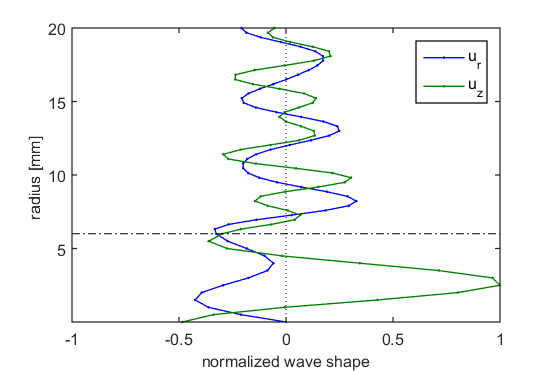
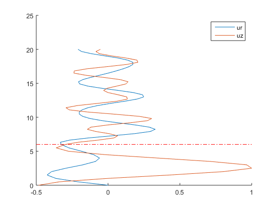
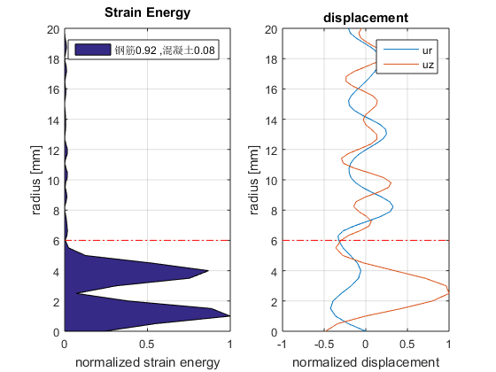

Contents
弹性参数计算
clc,clear,close all
E = 208e9;
nu = 0.29;
mu = E/(2*(1+nu));
lambda = nu*E/((1+nu)*(1-2*nu));
E2 = 19.89e9;
nu2 = 0.1923;
mu2 = E2/(2*(1+nu2));
lambda2 = nu2*E2/((1+nu2)*(1-2*nu2));
r0 = 6;
读取位移坐标
fig = open(tools.getfile);
h=findobj(gca,'Type','Line');
x = get(h,'xdata');
y = get(h,'ydata');
ur = x{6};
uz = x{5};
rvect = y{5};
rvect0 = rvect(1:end-1);
figure
hold on
plot(ur,rvect,uz,rvect);
legend({'ur','uz'})
tools.xline([0 6],'r-.')
 
应变与应变能计算
eps_rr = diff(ur);
eps_zz = diff(uz);
strainEnergy1 = 0.5*(lambda+2*mu).*(eps_rr.^2+eps_zz.^2)+lambda*(eps_rr.*eps_zz);
strainEnergy2 = 0.5*(lambda2+2*mu2).*(eps_rr.^2+eps_zz.^2)+lambda2*(eps_rr.*eps_zz);
strainEnergy = strainEnergy1.*(rvect0<= r0) + strainEnergy2.*(rvect0 > r0);
strainEnergy = tools.norm(strainEnergy)';
应变能占比分析
E_steel = trapz(rvect0,strainEnergy1);
E_concrete = trapz(rvect0,strainEnergy2);
E_total = E_steel+E_concrete;
E_steel_percent = E_steel/E_total;
E_concrete_percent = E_concrete/E_total;
str1 = sprintf('钢筋%0.2f ',E_steel_percent);
str2 = sprintf('混凝土%0.2f',E_concrete_percent);
应变能绘图
figure
subplot(121)
area(rvect0,strainEnergy)
tools.xyt({'radius [mm]','normalized strain energy','Strain Energy'})
ylim([0 1]),xlim([0 max(rvect)])
tools.xline([6 0],'r-.')
view(90,-90)
legend([str1,',',str2],'Location','north')
subplot(122)
plot(ur,rvect,uz,rvect);
legend({'ur','uz'})
xlim([-1 1]),ylim([0 max(rvect)])
tools.xyt({'normalized displacement','radius [mm]','displacement'})
tools.xline([0 6],'r-.')
